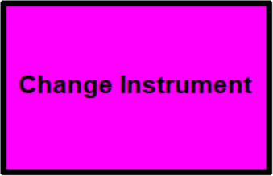

The Main Focus of this Lab
- In this lab, you focus on:
- Constructing a data structure (a multi-dimensional list of lists structure)
- Accessing data from this data structure
- Processing and analysing data from this data structure
What You Will Learn in This Lab
- In this lab, you will gain experience in the following areas:
Topic Computer Science/ Programming Concept Using extra module Importing extra module by importGlobal variables Using global variables and the globalcommandUsing List Understanding and using a list of lists structure Getting items from a list using index list_name[index number]Processing and analysing numerical data stored inside a list of lists Repeating things using loops Using for loops ( for ...)Building nested loops, i.e. a loop inside another loop Using range()with a for loopUsing the turtle graphics module Getting text input using turtle.textinput()Getting number input using turtle.numinput()Using special characters Using the tab character ( \t) in text filesUsing the newline character ( \n) when displaying string content
Overview
- In this lab, you will work on a music system using a Python program
- The program mainly does the following two things:
- Read a text file containing a list of music notes of a song
- Produce the digital audio of the song using different musical instruments
- For example, the music system can produce songs like these:
- Beauty and the Beast (using the musical instrument - trombone)
- Turkish March (using the musical instrument - acoustic grand piano)
- Beauty and the Beast (using the musical instrument - trombone)
- Here is an example video of running the music system:
- It is wise to use earphones/headphones for this lab!
- The sound from your laptop speaker may not be clear enough
Lab Content
- Here are the steps to complete this lab:
- Understanding the program
- 1.1. Getting started
- 1.1.1. Downloading the starting program
- 1.1.2. Downloading other files
- 1.1.3. The folder structure
- 1.2. The program interface
- 1.3. The music files
- 1.4. The music handling functions
- Loading and playing music
- 2.1. Loading a music file
- 2.1.1. Introduction
- 2.1.2. The music list
- 2.2. Playing the music
- 2.2.1. Introduction
- 2.2.2. Reading the music list using a for loop
- Changing the musical instrument
- 3.1. Introduction
- 3.2. Selecting your musical instruments
- 3.3. The Python code
- 3.3.1. Changing the instrument
- 3.3.2. Showing the instrument list
- 3.3.3. Updating the instrument display
- Transposing the music
- 4.1. Introduction
- 4.2. The Python code
- 4.3. Keeping the music in playable range
- Speeding up/slowing down the music
- 5.1. Introduction
- 5.2. The Python code
- Making some crazy music
- 6.1. Introduction
- 6.2. The Python code
- Submission
- Understanding the program
1. Understanding the Program
Video Tutorial for Section 1.1
1.1. Getting started
1.1.1. Downloading the starting program
- A Python file (
music_system.py) is given to you as a starting point here (right click on the link, select 'Save Target As' or something similar) - For this lab, it would be better to put all files inside a new folder
- For example, you can create an empty folder called
lab6in your local hard disk - Then, put the starting file into this newly created folder
- For example, you can create an empty folder called
- The program does not work by itself
- You also need the following files:
- A Python module called
music - Some sound font files
- Some music files
- A Python module called
1.1.2. Downloading other files
The music module
- You can download the music module (
music.py) here (right click on the link, select 'Save Target As' or something similar)- You are not required to understand the code in the music module - it won't be taught
- You need to place it into the same folder as your starting program
- The starting program has already imported the module, using this line of code near the top:
import music
The sound font files
- The
musicmodule uses some files called sound fonts to create the music - It can work with 128 different sound font files, which represent the 128 available musical instruments you can use
- Since the file size of these sound font files is quite big, you can first download the piano sound font
(
acoustic_grand_piano.zip) to begin with, which is available here- Right click on the link, select 'Save Target As' or something similar
- Note that although it is a zip file, you DO NOT need to extract the content of it
- By default, the starting program uses this instrument (acoustic grand piano, which is shown below) to produce songs
- You need to put the sound font file into a folder called
soundfont - This soundfont folder should be created in the same folder as your music module, as shown by the folder structure below:
- You will download more sound fonts for different musical instruments later in the lab
The music files
- Finally, to make music, the program needs to read songs from some music files
- Each music file contains the music notes of a song
- We have prepared the full versions and the short versions of a few songs, in text format:
- Turkish March - turkish_march.txt (185 seconds long), turkish_march_intro.txt (3.5 seconds long)
- Phantom of the Opera - phantom_of_the_opera.txt (255 seconds long), phantom_of_the_opera_intro.txt (14.5 seconds long)
- Beauty and the Beast - beauty_and_the_beast.txt (157 seconds long), beauty_and_the_beast_intro.txt (13 seconds long)
- It's a Small World After All - small_world.txt (111 seconds long), small_world_intro.txt (8 seconds long)
- Moonlight Sonata - moonlight_sonata.txt (110 seconds long), moonlight_sonata_intro.txt (11.5 seconds long)
- Contrapunctus I from J.S. Bach's The Art of Fugue - art_of_fugue.txt (199 seconds long), art_of_fugue_intro.txt (11.25 seconds long)
- Let It Go - let_it_go.txt (219 seconds long), let_it_go_short.txt (7.1 seconds long)
- To download a file, you can right click on the file link and select 'Save link as' (or similar text)
- You should put these music files into a folder called
songs - Similar to before, this folder should be created in the same folder as your music module, as shown below:
1.1.3. The folder structure
- After downloading the starting program and its relevant files, the folder structure should look like this:
- There are two Python files,
music_system.pyandmusic.py - The two folders
songsandsoundfontcontains 14 text files and 1 sound font respectively
1.2. The program interface
Video Tutorial for Section 1.2
- After you download everything, you can run the program (
music_system.py) using IDLE - After running the code you will see a menu displayed in the turtle window like this:

- In this menu you select a function by clicking on one of the colour areas, i.e.:
- Load Music (blue)
- Play Music (yellow)
- Change Instrument (purple)
- Transpose Music (orange)
- Adjust Speed (red)
- Make Crazy Music (green)
- The functions for Load Music and Play Music have already been done for you
- To make the program work for other functions you need to add appropriate code
1.3. The music files
Video Tutorial for Section 1.3
- The music files store music as a series of music notes in text format
- Each line has
- Start time - the start time of the note, in seconds
- Pitch - the pitch of the note, an integer in the range 0 to 127
- The relationship of the pitch number and the key position on a standard piano keyboard is shown below:
The pitch number goes up in increments of one, including the black keys
- The relationship of the pitch number and the key position on a standard piano keyboard is shown below:
- Duration - the length of the note, in seconds
- Here is an example of a music file:
0 60 0.5 1 62 0.5 2 64 0.5
- In the file, the start time, pitch and duration values are separated by tab characters (
\t)
- In the file, the start time, pitch and duration values are separated by tab characters (
- The music stored in the above example can be illustrated by a timeline:
- You can download the above music (
music_example.txt) from here- To download the file, you can right click on the file link and select 'Save link as' (or similar text)
- You can put this file in the same folder as your music program
- Don't put this file in the songs folder
- To play the music file, you can click on the Load Music area after running the program
- If you have put the music files from section 1.1.2 inside the
songsfolder, you will see those songs listed in the text input box: - Although you can load a song by entering a number (e.g. enter 4 for let_it_go.txt) in the box, we want to play the example music file with three notes
- Therefore, you load the example music file by typing its file name, i.e.
music_example.txt, in the input box - After loading the music file, you can play the music by clicking on the Play Music area
- Here is a video of using the music system to play the very simple music stored in music_example.txt:
You can also download the video
1.4. The music handling functions
Video Tutorial for Section 1.4
- The music program uses a Python module called
music - The music module provides functionalities for playing a sequence of music notes using a variety of musical instruments
- Here are the functions or values used by the music program:
music.getsonglist()- This function gets the list of music files and their file names currently available in the
songsfolder - It has been used in the Load Music function to show the list of songs in the input box
- This function gets the list of music files and their file names currently available in the
music.addnote(time, pitch, duration)- This function adds one note in the music module at a certain time with a certain pitch and duration
- It has been used in the Play Music function to add music notes from the current music content
music.play()- This function plays the music content added to the music module
- It has been used in the Play Music function to start playing the music
music.stop()- This function stops the music currently being played by the module
- It has been used at the end of the program so that any music is stopped before the program finishes
music.clear()- This function clears the music content currently stored in the music module
- It has been used in the Play Music function to clear any music in the module before loading a new piece of music
music.instrument_list- This is a list containing the names of the 128 musical instruments
- You will use this in the Change Instrument function later
music.setinstrument()- This function changes the musical instrument to be used by any subsequent
music.addnote()function call - You will use this in the Change Instrument function later
- This function changes the musical instrument to be used by any subsequent
2. Loading and Playing Music
2.1. Loading a music file
Video Tutorial for Section 2.1
2.1.1. Introduction
- This function has been done for you
- The code is given in the
loadMusic()function:# This function loads some music into the music list def loadMusic(): global music_data ... - The purpose of this function is to:
- Ask the user for the music file to be used
- Load the music file content into a list called
music_data - Show the music summary in the turtle window
- The Python code inside this function (load music) is a bit scary but don't worry about it!
- At this stage of the course, you are not expected to understand how it works
- You only need to understand that the content of the music file will be read into a list named
music_data
2.1.2. The music list
- The music list, i.e.
music_data, has been created in the starting code like this:# Initialize the music data music_data = []
- The format of this list is very similar to the music file
- The list is a list of lists with:
- the outer list as the collection of music notes, and
- the inner list as the information of one music note
- The music list can be visualized like this:
- For example, to access the first note of the music you can use this code:
first_note = music_data[0]
music_data[0]returns the first item of the outer list, i.e. the first note of the musicfirst_notethen stores the information of a single note
- For each music note, i.e. the inner list, three pieces of information (time, pitch and duration) are stored
- For example, the following code extracts these three pieces of information from the first note of the music:
note_time = music_data[0][0] # same as note_time = first_note[0] note_pitch = music_data[0][1] # same as note_pitch = first_note[1] note_dur = music_data[0][2] # same as note_dur = first_note[2]
- Be careful! The indices of the music list are not anything related to X and Y in your high school geometry class
music_data[0][1]is better understood as row 0 and column 1
- Let's use the 3-note music file we have shown in section 1.3 to give you an example music list
- Remember that the content of the music file is like this:
0 60 0.5 1 62 0.5 2 64 0.5
- If the above music is put in a music list, it will be stored in a list of lists like this:
[ [0, 60, 0.5], [1, 62, 0.5], [2, 64, 0.5] ]
2.2. Playing the music
Video Tutorial for Section 2.2
2.2.1. Introduction
- This function has been done for you
- The code is given in the
playMusic()function:# This function plays the music def playMusic(): global music_data ... - The purpose of this function is to:
- Generate the sound of the notes in the music list
- Play the music
- You can try to understand the code of this function, as it helps you understand how to work with the music list
2.2.2. Reading the music list using a for loop
- As you know, the music list, i.e.
music_data, contains all music notes of the song currently loaded in the system by the Load Music function - In the
playMusic()function, a for loop is used to read and generate the notes in the music module:# Add the music notes for i in range(len(music_data)): ... # Add the note note = music_data[i] music.addnote(note[0], note[1], note[2])- This for loop repeats as many times as the number of notes in the music list
- Each music note is stored in a variable called
note - The sound of each note is then generated in the music module using the
music.addnote()function
- After generating all notes in the music module, the program can play the music by running
music.play()
3. Changing the Musical Instrument
3.1. Introduction
Video Tutorial for Section 3.1 - 3.2
- You can use different musical instruments by clicking on the Change Instrument area

- Here are some examples:
- This is the song Phantom of the Opera (
phantom_of_the_opera.txt) played using the musical instrument church organ:
- This is the same song played using the musical instrument violin:
- This is the song Phantom of the Opera (
- An instrument is represented by a number in the range 0 to 127
- Therefore, there are in total 128 instruments for you to choose from
- For example, the number 0, the default instrument, is the acoustic grand piano and the number 40 means violin
- Here is a list of instruments available and their numbers:
No. Instrument Name 0 Acoustic Grand Piano 1 Bright Acoustic Piano 2 Electric Grand Piano 3 Honky-tonk Piano 4 Electric Piano 1 5 Electric Piano 2 6 Harpsichord 7 Clavinet No. Instrument Name 8 Celesta 9 Glockenspiel 10 Music Box 11 Vibraphone 12 Marimba 13 Xylophone 14 Tubular Bells 15 Dulcimer No. Instrument Name 16 Drawbar Organ 17 Percussive Organ 18 Rock Organ 19 Church Organ 20 Reed Organ 21 Accordion 22 Harmonica 23 Tango Accordion No. Instrument Name 24 Acoustic Guitar (nylon) 25 Acoustic Guitar (steel) 26 Electric Guitar (jazz) 27 Electric Guitar (clean) 28 Electric Guitar (muted) 29 Overdriven Guitar 30 Distortion Guitar 31 Guitar Harmonics No. Instrument Name 32 Acoustic Bass 33 Electric Bass (finger) 34 Electric Bass (pick) 35 Fretless Bass 36 Slap Bass 1 37 Slap Bass 2 38 Synth Bass 1 39 Synth Bass 2 No. Instrument Name 40 Violin 41 Viola 42 Cello 43 Contrabass 44 Tremolo Strings 45 Pizzicato Strings 46 Orchestral Harp 47 Timpani No. Instrument Name 48 String Ensemble 1 49 String Ensemble 2 50 Synth Strings 1 51 Synth Strings 2 52 Choir Aahs 53 Voice Oohs 54 Synth Choir 55 Orchestra Hit No. Instrument Name 56 Trumpet 57 Trombone 58 Tuba 59 Muted Trumpet 60 French Horn 61 Brass Section 62 Synth Brass 1 63 Synth Brass 2 No. Instrument Name 64 Soprano Sax 65 Alto Sax 66 Tenor Sax 67 Baritone Sax 68 Oboe 69 English Horn 70 Bassoon 71 Clarinet No. Instrument Name 72 Piccolo 73 Flute 74 Recorder 75 Pan Flute 76 Blown Bottle 77 Shakuhachi 78 Whistle 79 Ocarina No. Instrument Name 80 Lead 1 (square) 81 Lead 2 (sawtooth) 82 Lead 3 (calliope) 83 Lead 4 (chiff) 84 Lead 5 (charang) 85 Lead 6 (voice) 86 Lead 7 (fifths) 87 Lead 8 (bass + lead) No. Instrument Name 88 Pad 1 (new age) 89 Pad 2 (warm) 90 Pad 3 (polysynth) 91 Pad 4 (choir) 92 Pad 5 (bowed) 93 Pad 6 (metallic) 94 Pad 7 (halo) 95 Pad 8 (sweep) No. Instrument Name 96 FX 1 (rain) 97 FX 2 (soundtrack) 98 FX 3 (crystal) 99 FX 4 (atmosphere) 100 FX 5 (brightness) 101 FX 6 (goblins) 102 FX 7 (echoes) 103 FX 8 (sci-fi) No. Instrument Name 104 Sitar 105 Banjo 106 Shamisen 107 Koto 108 Kalimba 109 Bagpipe 110 Fiddle 111 Shanai No. Instrument Name 112 Tinkle Bell 113 Agogo 114 Steel Drums 115 Woodblock 116 Taiko Drum 117 Melodic Tom 118 Synth Drum 119 Reverse Cymbal No. Instrument Name 120 Guitar Fret Noise 121 Breath Noise 122 Seashore 123 Bird Tweet 124 Telephone Ring 125 Helicopter 126 Applause 127 Gunshot - Here is an example of changing instrument:
You can also download the video
3.2. Selecting your musical instruments
- There are 128 musical instruments that you can choose from
- To make each of them work in the music system, you need to put their sound fonts in the soundfont folder
- At this moment, you should only have the acoustic grand piano sound font available in the system
- Since the sound font files are quite big, it might be too much to download the sound fonts for all 128 musical instruments
- Instead, please select and download 10 musical instruments to use with your musical system
- For example, you may choose these instruments:
- 0 - acoustic grand piano (sound font file - acoustic_grand_piano.zip)
- 10 - music box (sound font file - music_box.zip)
- 19 - church organ (sound font file - church_organ.zip)
- 24 - acoustic guitar (nylon) (sound font file - acoustic_guitar_nylon.zip)
- 32 - acoustic bass (sound font file - acoustic_bass.zip)
- 40 - violin (sound font file - violin.zip)
- 56 - trumpet (sound font file - trumpet.zip)
- 64 - soprano sax (sound font file - soprano_sax.zip)
- 73 - flute (sound font file - flute.zip)
- 123 - bird tweet (sound font file - bird_tweet.zip)
- Right click on the link, select 'Save Target As' or something similar
- Note that although they are zip files, you DO NOT need to extract them before putting them in the soundfont folder
- If you use the above instruments, the folder structure will look like this:
- For example, you may choose these instruments:
- You can choose and download your own musical instruments from here
3.3. The Python code
- You need to add code in the
changeInstrument()function:# This function changes the instrument def changeInstrument(): global instrument ... - Here are the things that you need to work on:
- Changing the instrument
- Showing the instrument list in the input box
- Updating the instrument display
- These three things are discussed in the following sections
3.3.1. Changing the instrument
Video Tutorial for Section 3.3.1
- You need to use the
turtle.numinput()function to ask for the instrument number - Once you have got the input, you need to convert it to an integer
- To change the instrument, you need to use the
music.setinstrument()function - The function accepts one number as input, which is the instrument number
- For example,
music.setinstrument(42)would mean that from now onwards the music will be played using a cello
(You must already have downloaded the soundfont for the instrument) - After changing the instrument, all songs played from now onwards will use the new instrument
- You may try to handle the case when
- The user click "Cancel". Then the returned value from
turtle.numinput()will beNone - The user enters a value less than 0
- The user enters a value greater than 127
3.3.2. Showing the instrument list
Video Tutorial for Section 3.3.2
- You only have a limited amount (i.e. 10) of musical instruments to choose from
- It will be helpful if you display the available instrument numbers in the input box, for example, like this:
- There are two approaches to do that:
- Using a loop to build the list of instruments
- You can use a loop to put the instrument information as part of the input box message
for instrument in [...the instrument numbers...]: ...put together the instrument number and instrument name in one line... ...add the line to the end of the input box message...
- For example, you can put each instrument on a separate line using the newline character (
\n) - You may refer to the Load Music function to see how you can do this
- For example, you can put each instrument on a separate line using the newline character (
- To get the instrument names from the instrument numbers,
you can use the list
music.instrument_listprovided by the music module
- You can use a loop to put the instrument information as part of the input box message
- Using a big multiple lines string
- You can fix the input box message using a big string with
"""...""" - For example, you can build the message like this:
message = """0: acoustic grand piano 1: bright acoustic piano ...the rest of the instruments... Please enter the instrument number (0-127):"""
- You can fix the input box message using a big string with
- Using a loop to build the list of instruments
3.3.3. Updating the instrument display
Video Tutorial for Section 3.3.3
- The music summary is displayed near the top of the turtle window after loading a song, e.g.:
- At the moment, only the number of music notes and the music duration is shown
- It will be very useful if the current instrument is also shown there so that you know what will be used when you play a song
- The instrument can be added after the music summary like this:

- To do that, you need to change the
updateMusicSummary()function - You can add the instrument name, right after the duration display
- Inside the function, you need to find a way to get the current instrument name
- However, it is not available in the main part of the program
- You may use the global variable
instrumentand the listmusic.instrument_listto do that - Even if you cannot successfully do this, you can carry on and do the following stages
4. Transposing the Music
Video Tutorial for Section 4
4.1. Introduction
- In the program, you can transpose the music by clicking on the Transpose Music area
- Transposing a piece of music means shifting all the pitch numbers of the music notes up or down
- For example, if you increase all the pitch numbers by twelve,
you will transpose a piece of music up by 12 pitches, like this:
Original Music Transposed Version 0 60 0.5 1 62 0.5 2 64 0.5
0 72 0.5 1 74 0.5 2 76 0.5
- For example, if you increase all the pitch numbers by twelve,
you will transpose a piece of music up by 12 pitches, like this:
- Here are some examples:
- This is the song Let It Go (
let_it_go.txt) played without any transposition:
- This is the same song played by transposing up 12 pitches:
- This is the same song played by transposing down 6 pitches:
- This is the song Let It Go (
4.2. The Python code
- To transpose the music, you need to extend the
transposeMusic()function:# This function transposes the music pitch def transpose(): global music_data ... - Inside, you ask the user for the amount of transposition (a number)
- A positive number means to transpose up, and a negative number means to transpose downward
- You may try to handle the case when
- The user click "Cancel" in the prompt. Then the returned value from
turtle.numinput()will beNone - Then you can use a
forloop to add the pitch value and the transposition value - Then put the result back into the pitch value of each music note
- The
forloop can be constructed like this:for note in music_data: # Change the pitch value ...- This code is a simple version of the
forloop used in section 2.2.2 - It reads the music list from the first item to the last item
- Each item is stored as a variable called
note, for each repetition of the loop
- This code is a simple version of the
- To get the pitch value, remember that the pitch is the second item of the list
- After you finish the function, you may test it using this sequence:
- Load a new piece of music
- Play the music (this would be the original music)
- Transpose the music using 12
- Play the music (you should hear a version with higher pitches compared to the original music)
- Transpose the music using -24
- Play the music (you should hear a version with lower pitches compared to the original music)
- Transpose the music using 12
- Play the music (you should hear the original music)
4.3. Keeping the music in playable range
- Note that if you are transposing the notes too high or too low, they may go out of the playable range!
- When that happens you will not be able to hear anything
- One way to prevent that is to keep the pitch numbers between 0 and 127
- If the pitch number is bigger than 127, simply use 127
- If the pitch number is smaller than 0, simply use 0
- Note that this will change the music permanently, but it is better than crashing the program!
5. Speeding Up/Slowing Down the Music
Video Tutorial for Section 5
5.1. Introduction
- The start time and the duration of the music list controls the timing of playing the music notes
- You can change the timing information so that the music is played faster or slower
- For example, to play a piece of music twice as slow, you can multiply the time and duration values of each note by two
- Below is an example:
Original Music Slower Version 0 60 0.5 1 62 0.5 2 64 0.5
0 60 1.0 2 62 1.0 4 64 1.0
- You do that in the program by clicking on the Adjust Speed area
- Here are some examples:
- This is the song It's a Small World (
small_world.txt) played with its original speed:
- This is the same song played faster (200% of its original speed):
- This is the same song played slower (75% of its original speed):
- This is the song It's a Small World (
5.2. The Python code
- The code to adjust the speed of the music is to be added to the
adjustSpeed()function:# This function adjusts the speed of the music def adjustSpeed(): global music_data ... - Inside the function, first you ask the user for the change of the speed of the music
- Again, you may try to handle the case when
- The user click "Cancel" in the prompt. Then the returned value from
turtle.numinput()will beNone - This function accepts an input, which is the percentage of speed change
- A speed change value of 140% means the music will be 40% faster than before
- Note that the timing information of a music note and the speed of the music are inversely proportional to each other
- Multiplying the speed by an amount is equivalent to dividing the time of the music by the same amount
- Therefore, 140% means that the timing information is divided by 1.4
- Then you can use a
forloop to adjust the timing information, like this:for note in music: # Change the time and duration value ... - This function changes the overall duration of the music so you need to update the music summary display
- This can be done by running
updateMusicSummary()before the end of the function - After you finish the function, you may test it using this sequence:
- Load a new piece of music
- Play the music (this would be the original music)
- Adjust the speed of the music using 50
- Play the music (you should hear a slower version compared to the original music)
- Adjust the speed of the music using 400
- Play the music (you should hear a faster version compared to the original music)
- Adjust the speed of the music using 50
- Play the music (you should hear the original music)
6. Making Some Crazy Music
Video Tutorial for Section 6
6.1. Introduction
- In this part of the lab, you will generate some crazy music, for example, like the ones below:
- You can click on the Make Crazy Music area to start building one
- The crazy music will replace the current music loaded in the system
- In this project you make a piece of crazy music by repeating a sound a few times
- This sound contains many music notes playing from a starting pitch to an ending pitch within a short time
- Here is the general flow to make a piece of crazy music:
- for
repetition= 0 to the Number of Repetitions - 1- for
pitch= Starting Pitch to Ending Pitch (including the ending pitch number)- play a music note of the current
pitchnumber
- play a music note of the current
- for
- for
- You need the following four parameters to make a piece of crazy music:
- Number of repetitions to play the sound
- Duration of the sound
- Starting pitch of the sound, and
- Ending pitch of the sound
- Here are some examples:
- crazy music 1 has the following parameters:
- Number of repetitions = 1
- Duration of the sound = 10s
- Starting pitch of the sound = 24
- Ending pitch of the sound = 107
- crazy music 2 has the following parameters:
- Number of repetitions = 4
- Duration of the sound = 1s
- Starting pitch of the sound = 48
- Ending pitch of the sound = 83
- crazy music 3 has the following parameters:
- Number of repetitions = 10
- Duration of the sound = 0.5s
- Starting pitch of the sound = 100
- Ending pitch of the sound = 30
- crazy music 1 has the following parameters:
6.2. The Python code
- You add the code to make some crazy music inside the
makeCrazyMusic()function:# This function makes a piece of crazy music in the music list def makeCrazyMusic(): global music_data ... - First, you need to add the code to ask the user for the four parameters of the crazy music
- That means you need to use
turtle.numinput()4 times - The number of repetitions, starting pitch and ending pitch are integers
- The duration of the sound is a real number (a float)
- Again, you may try to handle the case when
- The user click "Cancel" in the prompt. Then the returned value from
turtle.numinput()will beNone - After that you have to clear the current music list,
music_data, by putting a empty list into it, i.e.:music_data = []
- Then, you can start building your crazy music using the parameters you have obtained above
- This involves using a nested loop to generate a sound repeatedly inside the music list
- The outer loop runs for the number of repetitions so that the sound can be repeated several times
for index in range(...number of repetitions...): ...create the sound in music_data...
- The sound is either an increasing sequence or a decreasing sequence of music notes
- For example,
- If duration of the sound is 1s, starting pitch is 60 and ending pitch is 64, then the content of the music list for one sound will be:
[ [0.0, 60, 0.2], [0.2, 61, 0.2], [0.4, 62, 0.2], [0.6, 63, 0.2], [0.8, 64, 0.2] ]
- There are 5 music notes because the pitch number starts from 60 and goes up to 64, i.e. number of notes = 64 - 60 + 1
- The duration of each music note is 0.2s, which is just the duration of the sound divided by 5
- If duration of the sound is 1.5s, starting pitch is 84 and ending pitch is 73, then the content of the music list for one sound will be:
[ [0.0, 84, 0.125], [0.125, 83, 0.125], [0.25, 82, 0.125], [0.375, 81, 0.125], [0.5, 80, 0.125], [0.625, 79, 0.125], [0.75, 78, 0.125], [0.875, 77, 0.125], [1.0, 76, 0.125], [1.125, 75, 0.125], [1.25, 74, 0.125], [1.375, 73, 0.125] ]
- There are 12 music notes because the pitch number starts from 84 and goes down to 73, i.e. number of notes = 84 - 73 + 1
- The duration of each music note is 0.125s, which is just the duration of the sound divided by 12
- If duration of the sound is 1s, starting pitch is 60 and ending pitch is 64, then the content of the music list for one sound will be:
- In the above examples, the sounds always start from 0s
- However, if you need to repeat the sound in the music, the other copies of the sound will need to start from different times
- The inner loop is then something that may look like this:
for index in range(...number of repetitions...): for pitch in ...the range of pitch numbers...: ...append a music note to music_data...
- You need to be careful that the range of pitch numbers works quite differently for increasing pitch numbers (step = 1) and decreasing pitch numbers (step = -1)
- You also need to make sure that the range of pitch numbers is inclusive of the starting pitch and the ending pitch values
- As a new piece of music is generated, you need to update the music summary using
updateMusicSummary() - After you have made your crazy music, you could change it using the transpose and speed functionality, if you want to
- Simply click on the appropriate (orange and red) areas in the screen display to do that
- You can also use different musical instruments to generate the sound
- You can click on the purple area to do that
Submission
- You don't need to submit this work
- However, it's a good idea to keep a copy of your work for your own reference
- For example, you can put your file in your USB disk (if you have one) or email a copy to yourself